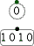

Sonde
Sonde
| Librairie: | Câblage |
| Introduction: | 2.0.3 (dans la bibliothèque de base, déplacé dans le câblage en 2.7.0) |
| Apparence: |  |
Comportement
Une sonde est un élément qui affiche simplement la valeur à un point donné dans un circuit. Il n'interagit pas avec d'autres composants.
À bien des égards, le composant de sonde duplique la fonctionnalité trouvée dans un composant Pin configuré en tant que pin de sortie. La sonde présente cependant certaines différences :
- Elle n'est pas considérée comme une sortie par un circuit de hiérarchie supérieur.
- Elle n’a pas d’attribut Data Bits à configurer, la largeur de bit est déduite de la valeur qu’elle trouve sur son entrée.
- Graphiquement sa bordure est plus fine et grise.
Pins
Un composant de sonde ne possède qu’une seule broche, qui servira d’entrée à la sonde. La largeur acceptée par cette broche est adaptative: la sonde s'adaptera aux entrées de toute largeur.
Attributs
Lorsque le composant est sélectionné ou ajouté, les touches fléchées modifient son attribut Orientation
.
- Orientation
- Le côté du composant dessiné où doit se trouver sa broche d'entrée.
- Label
- Le texte dans l'étiquette associée au composant.
- Emplacement du libellé
- L'emplacement de l'étiquette par rapport au composant.
- Police de libellé
- La police avec laquelle rendre l'étiquette.
- Radix
- la base (par exemple, binaire, décimale ou hexadécimale) dans laquelle une valeur est affichée.
Action de l'outil pousser
Aucun.
Action de l'outil text
Permets de modifier l’étiquette associée au composant.